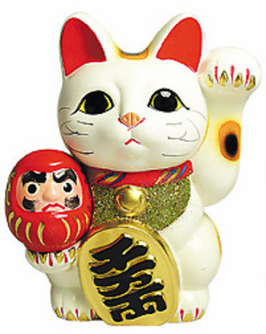

MANEKI-NEKO
La llegenda prové del Japó, segons la cultura japonesa, un pagès estaba per meitat del camp quan de sobte va començar a ploure, la pluja va anar augmentar fent d'aquesta una tormenta, el pagès es va refugiar sota un gran arbre. Després de poc temps, va veure a la meitat del cap, un moix que el miraba fixament i movia la cama cap a la seva direcció com si volgués cridar l'atenció d'aquell home.
El pagès, ple de curiositat, va decidir anar i apropar-se al moix encara estes enmig de la tormenta. Quan va arribar a la posició allà on estava l'animal, un raig va caure just a l'arbre on l'home s'esteia refugiant de la pluja, l'impacte va ser molt gran, tant que l'arbre va quedar destrossat.
El que va entendre l'home, és que el gat sabia el que passaria i volia ajudar i salvar al pagès, des de aquell instant Maneki-neko se li diu també moix de la sort o de la fortuna.
NEKOMATA I YOKAI
També succeïda al Japó, la historia del Nekomata, i un yokai (parescut a un espíritu fantasmal japones).
Es conta que el Yokai, complerts cert anys de vida, poseeix l'habilitat de caminar a dues cames i interactuar amb els humans. Al continent asiàtic, això també és símbol de la bona sort ja que ens indica que l'humà ha sabut cuidar-lo bé per arribar a tanta edat i ara ja, pot cercar ajuda o consells per ell mateix.

MOIXOS A L'ANTIC EGIPTE
Els egiptes de l'època, tenien als moixos com a deus i eren sagrats, els adoraven. Els associaven amb la protecció o consideraven que eren una reencarnació de la deesa Bastet, la qual representava l'amor, la fecunditat i la bellesa i protecció.
Sobretot els associaven amb protecció ja que perteneixen a la familia dels felins, la qual estaria directament relacionada amb els lleons, el deu del sol, Ra.

ELS MOIXOS I LA MÀGIA
A continuació hi ha un video allà on explica la llegenda detallada.